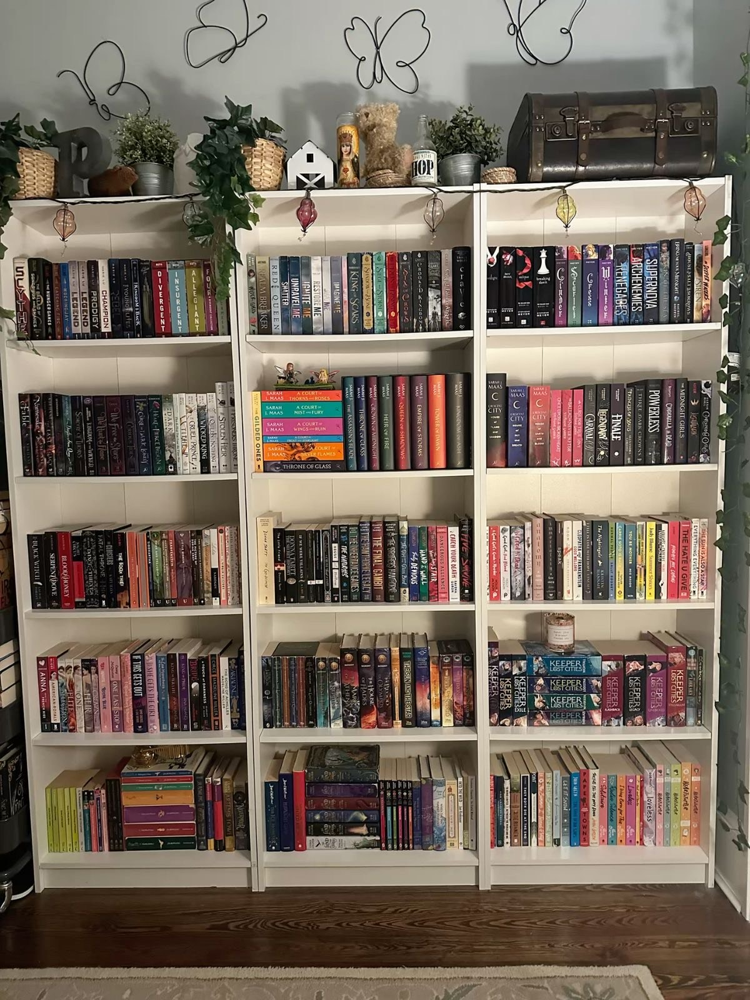

Characteristics of BookTok
Rapid consumption, artistic book curation ("shelfies"), and strong emotional responses to books are the focal points of BookTok members' highly emotive, community-driven activities. Purchasing books based on popular recommendations, filming sentimental reviews, annotating books, and establishing parasocial connections with authors are all important actions.
Examples of BookTok's visual features
Emotional reading and reviews: People frequently choose books based on the promise of intense emotions ("teary-eyed reviews") and develop strong bonds with the writers and characters. Videos frequently show viewers gushing about romantic moments, gasping at narrative twists, and crying over painful situations. The intention is to evoke strong emotions in you so that you will want to read the book as well.
High volume purchasing: Users frequently exhibit high rates of book purchases, perhaps treating them more like commodities or collectibles ("shelfies") than as reading material.

Some examples of behaviors of BookTokers:
Genre Preference and Tropes: Popular genres include romance, fantasy, and young adult (e.g., Colleen Hoover novels, Grishaverse), with a focus on tropes like "enemies to lovers" or "dark romance".
FOMO-Driven Consumption: Users often feel pressure to keep up with trending books, resulting in rapid, "binge-reading" behavior and a fear of missing out on popular trends.
Defensive Fan Culture: Users can become protective of the books they enjoy, leading to heated discussions, backlash against negative reviews, and intense defense of favorite authors
The physical act of reading and the "aesthetic" of being a reader are major motivators for BookTok. These particular techniques are often used by creators and followers to demonstrate their reading process:
- Translucent Sticky Notes: These allow you to write notes directly over text in books without permanently damaging the page.
- Color-coded Annotation Tabs: These are used to identify particular quotations, cliches, or poignant plot aspects (e.g., pink for romance, blue for despair).
- Mildliner Highlighters & Bleed-Resistant Pens: Essential for highlighting favorite quotes without bleeding through thin book paper.
- Translucent Sticky Notes: These allow you to write notes directly over text in books without permanently damaging the page.
- Color-coded Annotation Tabs: These are used to identify particular quotations, cliches, or poignant plot aspects (e.g., pink for romance, blue for despair).
Tools for Creating Content (For BookTokers)
Both common and specialist digital production technologies are used by authors to transform books into viral short-form videos:
- TikTok Studio and CapCut: The main video editors used to add auto-captions, make beautiful transitions, and cut clips to popular music.
- Canva: A popular tool for creating eye-catching static images, reading wrap-up slideshows, "mood boards" for books, and star-rating templates.
- Physical Equipment: A tall phone tripod (sometimes with a flexible arm for overhead "flat lay" images of books) and a small clip-on microphone to allow clear audio over background page-turning noises are typical components of minimalist setups.
- Link-in-Bio Aggregators: Programs like Beacons.ai or Linktree are inserted into the profile bio to point readers to affiliate links, Amazon stores, or Goodreads profiles.
Booktok is a fast-paced, intensely participatory digital ecosystem where social media culture and reading collide.